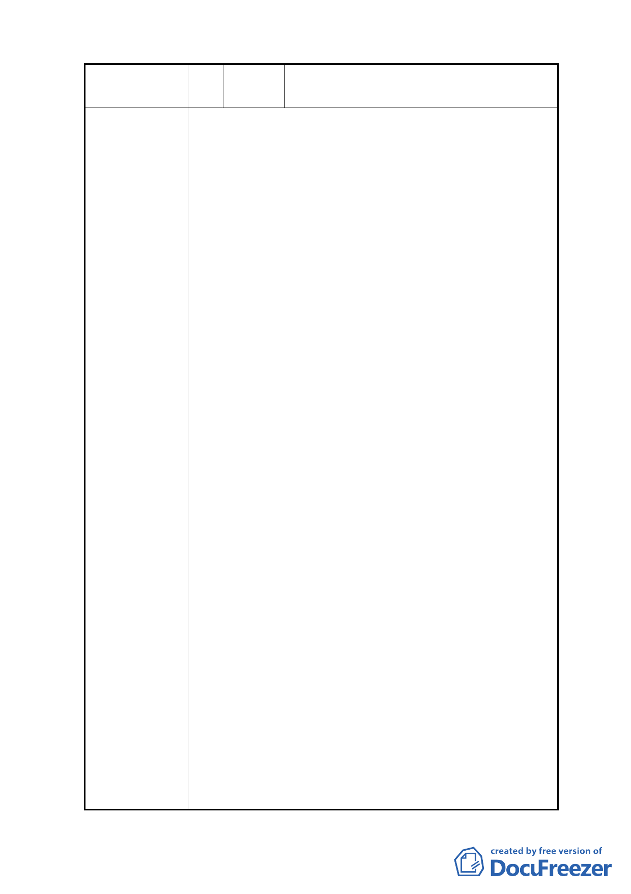

編 號 4 陳情人 黃昭正、林寶鳳、古煊璋、唐麗輝、李善
果、陳能賢
1.鄰近住宅區放置廢料或興建電力設施安全呈一大隱
憂。
2.不安全，不同意設至上述地址。
3.住宅地區作為存放電力設施且內容不詳，令周邊住家
深感惶恐不安。若以興建電力設施或放置材料皆對附
近住戶產生潛在危險。
4.不贊成變更。
5.看到文山區這個都市計畫，不知該哭還是該笑；想哭
的是，我們的郝政府怎麼了，這麼草菅人命，是為行
政上的便利，還是人命真的那麼不值錢，還是我們國
家的學童或國高中的學生再也不是國家未來主人的主
人翁，他們的人身安全，他們的學習環境不必再被考
慮了嗎？想笑的是，文山區尚有許多可以利用，但住
家不是那麼密集的地點，可笑主導都市計畫的長官們
不花時間及利氣努力尋找適當地點，卻便利的想在包
含國小、國中、高中學校及住宅高度密集又道路狹小
陳 情 理 由 的地區變更為台電的電力用地，計畫內含糊的用途更
令人憂心！
地號 284-2 土地現為台電放置設備場地，偶見台電員
工穿著防護衣及口罩進入現場放置物品，在高牆內放
置何物品？為何需要穿防護衣？台電只愛惜自己的生
命，其他人等的生命如草芥嗎？現在要變更的地目是
否也要作與地號 284-2 土地同樣之用途？又本計畫交
通動線系統規劃材料進出雖選擇非上下學之時間，但
是否考慮上課時才料卸貨的吵雜聲影響學生上課的情
形？是否考慮住宅區的安寧？
忠順街有 47 巷嗎？各位長官們，你們要剷平哪一間民
房作為道路？忠順街狠寬嗎？平時公車域有雙向行駛
時尤需辛苦的會車，交通常常打結，若加上台電的貨
車進出豈不雪上加霜！你們有實地瞭解嗎？還是紙上
談兵，以為 12 米寬就可以因應了，道路的其他因素考
慮了嗎？其他人的路權呢？有考慮嗎？自古民為魚
肉、官為刀俎，現代民主社會了還無法改變嗎？
-4-